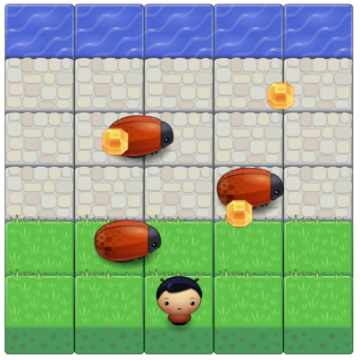
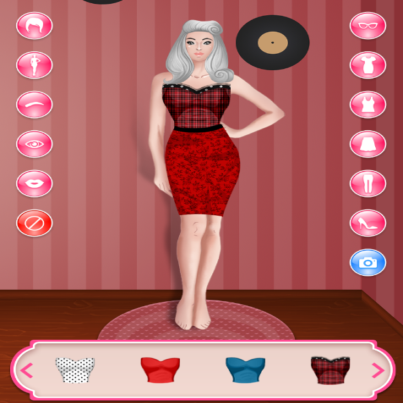

Galeria de Jogos Javascript
-
2048 -
Adivinhe o código -
Adivinhe o número -

Asteroids -

Atravesse a Rua -
Batalha Naval -

Break Out -
Campo Minado -
Cobrinha -
Cobrinha 2 -
Cobrinha 3 -
Command Conquer -
Corrida -
Diablo -
Envisionator -
Exo -

Flappy Bird -
Flappy Bird Original -
Guerra no Espaço -
Guess What -
Jogo da Forca -
Jogo da Memória -
Jogo da Velha -
Jogo da Velha 2 -
Labirinto -
Nanograma -
Naruto Click Game -
Off the line -
Pappu Pakia -
Ping Pong -
Pop Color -
Proteja a Base -
Ski Free -
Tetris -

Vestir a Boneca -
Vestir o Coelho -
Vizinhança Certa